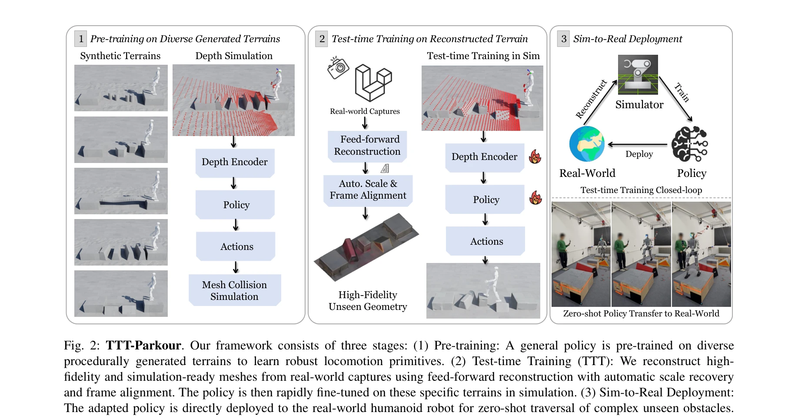
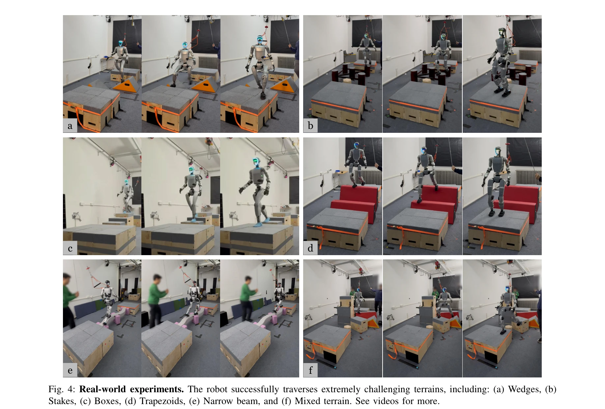
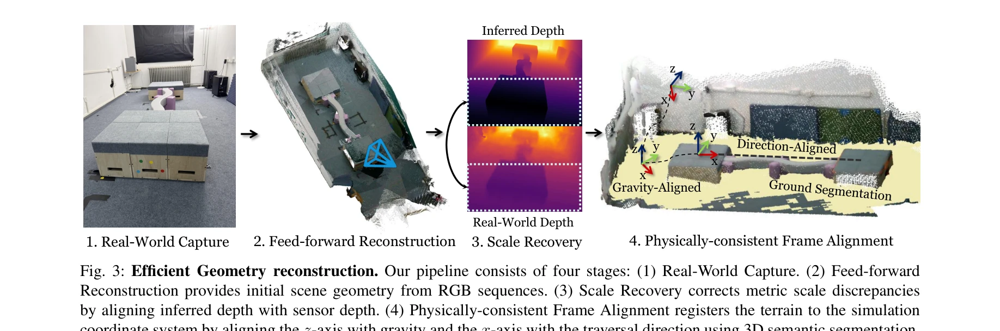

저자: Shaoting Zhu, Baijun Ye, Jiaxuan Wang, Jiakang Chen, Ziwen Zhuang, Linzhan Mou, Runhan Huang, Hang Zhao | 날짜: 2026-02-02 | DOI: 10.48550/arXiv.2602.02331

Fig. 2: TTT-Parkour. Our framework consists of three stages: (1) Pre-training: A general policy is pre-trained on divers
본 논문은 RGB-D 입력으로부터 고충실도 메시 재구성을 통해 미지의 복잡한 지형에서 휴머노이드 로봇의 빠른 테스트 시간 파인튜닝(TTT)을 가능하게 하는 real-to-sim-to-real 프레임워크를 제안한다.

Fig. 4: Real-world experiments. The robot successfully traverses extremely challenging terrains, including: (a) Wedges,

Fig. 3: Efficient Geometry reconstruction. Our pipeline consists of four stages: (1) Real-World Capture. (2) Feed-forwar
총평: 본 논문은 피드포워드 기하 재구성과 빠른 테스트 시간 파인튜닝을 통합하여 휴머노이드 로봇의 미지 복잡 지형 순회 능력을 획기적으로 향상시키는 실용적이고 혁신적인 프레임워크를 제시한다. 10분 이내의 완전 파이프라인과 강건한 sim-to-real 전이는 로봇 배포의 현실성을 크게 높인다.